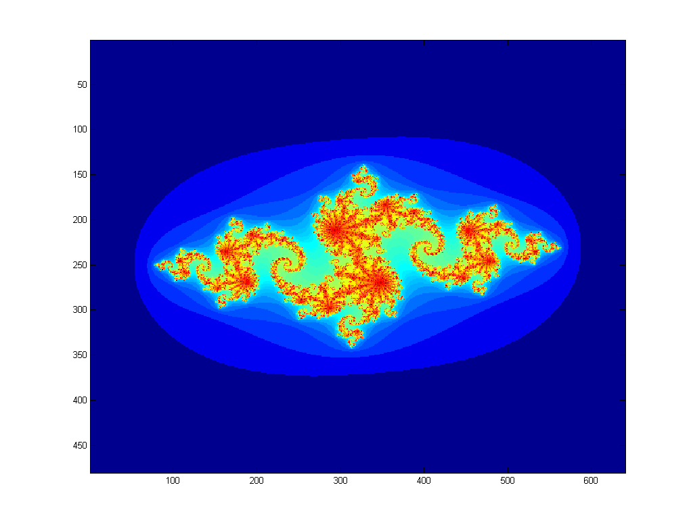

ECE 5760: Laboratory 4
Julia set visualization.
Introduction.
In this assignment you will implement a system to compute and draw Julia sets, and to zoom in on pieces of the set. A matlab program shows
how the computation is done. Note that the numbers are all complex. The image
below is from the program output. The x,y axis units are pixels, not natural
units. The x axis range is [-2,2] and the y axis [-2,2]. The second image uses a slightly modified program with x axis range [-1,1] and y axis [-1,1].


2014 student results:
From Ackerley Tng, Saisrinivasan Mohankumar and Ankur Thakkar. 1, 2, 3, 4
Procedures:
- There will be one serial processor to control computation and serial communication.
- You can use additional NiosII processors, pancake processors or build custom hardware to compute
the image. The computation of a 640x480 image is compute intensive, so you
are going to want to implement multiple computational units to speed up the
process. You may want to consider load balancing since some regions of the
complex plane are much faster to compute than others.
- If you use custom hardware, I suggest using 3.33 fixed point notation for
interating the quadratic
complex number calculation. The top bit will be the usual 2's comp sign bit.
This format give the numbers a dynamic range of +/-3. A matlab
program to check the effect
of limiting the range shows that the computation works.
If you use NiosII cpus to do the calcuations use 3.29 format.
- If you use a NiosII, I suggest using SDRAM as memory for the NiosII and
SRAM as the VGA display memory. Be sure to follow the suggestions in the SDRAM
tutorial to get the SDRAM timing correct.
- You must handle the boards only on on the ESD mat. These boards are expensive and you must be careful of them.
- Make sure the Altera DE2 board is connected to power and to the PC as specified
in the evaluation board description. Turn on the power supply with the red switch
on the board. Make sure the toggle switch on the left edge of the board marked (
Run/Prog) is in the Run position and leave it there at all times.
The FPGA will program in the Run position. Putting the switch in the Prog position writes your design to flash memory, which you do not want to do.
- The default top level module for the DE2 defines all of the logical i/o signals.
- You can define the mapping from logical signal to FPGA pins (pin assignment in QuartusII) for all the pins at once by importing this file using the menu item
Assignments... Import Assignments... and specifying the file name. There is no need to define pins one-by-one.
- A hardware VGA interface is shown on the DE2 page. Read VGA example 1 Verilog code.
--See also:
--Setting up Altera Monitor System
- Download the executable from http://www.altera.com/education/univ/software/monitor/unv-monitor.html. Make sure that you choose the version that matches the version of QuartusII which is installed.
- Install the executable. You will not be able to run it unless you ave previously installed QuartusII and the NiosIDE tools.
- When you run the monitor program in the lab, it may tell you that QuartusII is not installed. If so, open
control panel>system>advanced>environment variables and add a variable with name QUARTUS_ROOTDIR and value c:\altera\11.0\quartus.
- Follow the directions for setting up a new project in Altera Monitor Program. Choose the C option which uses
program with device driver support.
---Setting up a new project in the NiosII IDE: USE THIS REFERENCE for version 10.0 EDS
- When using the IDE there must be no space characters in the path you choose to your workspace!
- Start the IDE and specify a workspace. When you designed the cpu and top-level module, the design was stored in a folder. In the Workspace selection dialog box, browse for that folder, then add the string
\software to the folder path. This new folder will be used to store all of the software projects associated with the specific cpu you built in the SOPC. After you press OK, you may need to click on the workbench icon to do anything useful.
- Create a new software project. Select
File>New>project. A series of dialog boxes will open.
- In the
Altera NiosII item, choose NiosII C/C++ application, then click Next.
- Give the project a
name, specify the ptf file from SOPC builder, use the default location, and specify a blank project.
Then click Next.
- Select
creat new system library then click finish.
- Back in the main IDE window, right-click on the
syslib entry in the C/C++ Projects pane, then select Properties.
- In the dialog box, select
system library on the left.
- Associate the desired device with
stdout, stdin, and stderr. These will usually default to the JTAG UART.
- From the pulldown menu, select whether you are going to use
single threaded or microC/OS. Note that the web-version of the IDE does not support the operating system.
- Select the memory location, usually defaults to SDRAM.
- Click
OK to proceed.
- Back in the main IDE window, right-click on the
syslib entry in the C/C++ Projects pane, then select Build Project.
Wait for it to finish.
- Create header files using
File>New>headerfile and C files using File>New>file. The project (not the syslib) should be highlighted before creating the new source file.
- In
Run... menu item be sure that the download option points to the actual project (not the syslib project). In the Run... dialog double-click the NiosII hardware option to find the USB-blaster device and download to the software to the NiosII.
- If you get the following message when downloading your program to the NiosII (when using SDRAM for the program):
Using cable "USB-Blaster [USB-0]", device 1, instance 0x00
Pausing target processor: not responding.
Resetting and trying again: FAILED
Leaving target processor paused>
Then some suspects come to mind:
- You forgot to assign pins to the QuartusII project.
- There is an incorrect or missing PLL file for SDRAM delay (use the megawizard to rebuild or generate a new PLL module as described in the SDRAM tutorial.) Special Note: The component
altpll has changed between release 7 and 8 of Quartus. When defining a PLL for the phase-shifted SDRAM clock c0 (as explained in the SDRAM tutorial), you need to add an c1 output to the PLL with zero phase-shift and use this signal for the NiosII clock! If you don't do this, the program will load normally, with no error messages, but the program will not run! A new, corrected project is zipped here.
- There is a misspelled control line in the Nios module interface, usually the clock or reset signal.
- Check the size of the compiled hardware design. If the size is less than about 2000 logic blocks, then the Nios was probably optimized away. Check all the warnings to make sure no NiosII registers were reduced.
--Opening a downloaded, zipped project from the course site
- Unzip the file.
- Open the QuartusII project then:
- Regenerate the NiosII in SPOC builder.
- Close the SOPC builder.
- Resynthesize the Verilog design.
- Download the
sof file to the DE2.
- Start the Nios II IDE. The path to the IDE is approximately
C:\altera\kits\nios2_60\bin\eclipse\nios2-ide.exe.
- The folder heirarchy will have a folder with all the SOPC-generated stuff in it. In that folder will be a folder entitled
software. In the Nios II IDE menu File, choose Switch Workspace... and point the workspace to the software folder. The Nios IDE will appear to close itself, then reopen in the specified workspace. Some folders should appear in the left panel of the IDE.
- In the menu
Project, choose Clean..., and in the dialog box choose All projects. This action will remove any dependencies on older versions of the Nios IDE or libraries.
- Rebuild all the project parts by selecting the
Run menu, choosing Run as..., and then NiosII hardware.
Assignment
- There will be one serial processor to control computation and serial communication. The lower left and upper right corners of the visible computed
region should be displayed in the terminal window, with x in the range
[-2 2] and
y in the range [-2 2]. You should be able
to choose the maximum number of iterations using serial input, or toggle switches,
or however you want to do it.
- Upon pressing KEY3, the system should compute and display the full Julia
set with
c=-0.8+0.156*i ,
as shown above.
- The VGA graphics interface should run the VGA at 640x480 resolution.
You will need to share one word of SRAM between 2 pixels.
This will give you eight bit color for each pixel. Minimally, you will need
two colors corresponding to convergence/divergence. More colors may aid in
debugging and look cool. You may want to map color to the number of iterations
to divergence, or to the log of that number. A reasonable approximation of
the log is to just use the position of the largest non-zero bit in the count
(in matlab
fix(log2(count)).
- There will be a text interface for choosing c in which you spearately enter the real and imaginary parts on a terminal, LCD, or graphically.
- There will be a zoom interface using serial communication
to a terminal or graphical interface. I suggest that you enter an x,y pair in text format to set the center of the zoom and use two buttons to zoom in/out by a factor of two.
When you trigger the zoom calculation, the specified
corners should be reassigned to the corners of the display and every new pixel coordinate should be iterated
again.
- Part of your grade
will depend upon how fast you can render the full 640x480 set and two other regions picked on demo day. The
elapsed time in seconds and fractions of a second to draw should be shown in decimal on the 7-segment
LEDs.
Be prepared to demo your design to your TA in lab.
Your written lab report should include the sections mentioned in the policy page, and :
- A table of times (at 1000 iterations max) to compute various regions of the Julia set close
to the areas specified in the list.
c=-0.8+0.156*i, x=[-2 2], y=[-2 2] c=-0.8+0.156*i, x=[-.3, -.5], y=[-0.1,0.1]c=0.285+0.01*i, x=[-.45,-.55], y=[-.45,-.55]
- A collection of photographs of your favorite regions, and their coordinates.
The camera should be good enough to resolve individual pixels.
- A detailed dsecription of your SOPC design.
- A heavily commented listing of your Verilog design and GCC code (if you use NiosII) or Syrup code (if you use Pancake).
Copyright Cornell University
April 16, 2014
{kind=link}
{kind=link}
{kind=link}
{kind=link}